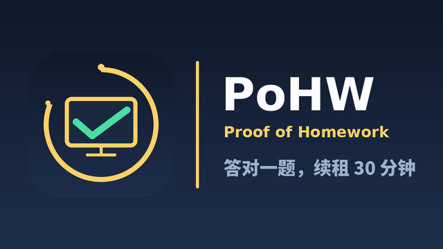

跨应用全屏答题遮罩
基于 TYPE_APPLICATION_OVERLAY 的全屏窗口，切到视频 App 或桌面后照样弹出；遥控器方向键、确定键、数字键 1-4 由遮罩自主路由，不依赖窗口 View 焦点。
Android TV · 家长守护 · 离线优先
答对题目，无限续租！
装在电视上的反沉迷小实验：开启守护后，前台服务会按设定周期在任意应用之上弹出全屏答题页，答对才能继续看电视；同一题答错 2 次自动换题并记入错题库。这是一台 Android TV 上的「答题解锁继续观看」家长守护工具。
PoHW 是 Proof of Work 的一个玩笑 —— 看电视的通行权不靠算力，而是靠周期性交一次「作业量证明」来续租。租约到期，重新出题。本项目是个人非商业的 Android TV 实验，只发布 APK，不上架任何应用商店。
示意图：电视 + 琥珀计时弧 + 青绿对勾
深蓝渐变圆角底 + 琥珀计时弧 + 屏幕里的青绿对勾 + 底座，呼应「答对题目，无限续租！」。图标与 TV 横幅均由仓库脚本可复现生成。

从全屏答题遮罩到离线题库与家长设置，全部围绕一件事：让孩子在继续观看前，先交一次「作业」。
基于 TYPE_APPLICATION_OVERLAY 的全屏窗口，切到视频 App 或桌面后照样弹出；遥控器方向键、确定键、数字键 1-4 由遮罩自主路由，不依赖窗口 View 焦点。
答对才能继续看电视，租约到期重新出题；「答对自动继续」默认开启，达到解锁门槛后直接关闭答题页，不用再按一次遥控器（可在家长设置里关掉）。守护开关合并为一个按钮，运行中显示「关闭守护」，关闭也必须先通过家长密码就地验证。
PoW 续租同一题累计答错 2 次自动原地换题，原题按题面去重记入本地错题库；控制台可翻页查看、删除、清空，并标出正确答案与选错项。
本地 SQLite内置 SQLite，覆盖小学 1–6 年级语数外；每题带明确年级标签与低 / 中 / 高难度分档。题目由按课标自编的题与整理自公开渠道、逐题校验清洗后的题组成。题库与守护离线可用、不收集数据；在线题库源默认关闭；局域网手机管理默认不监听，家长进入扫码管理页才开启。版本检查默认每 24 小时读取一次清单，可在家长设置里关闭。
离线优先 · 可选更新数学 / 语文 / 英语 / 其他学科四槽权重，默认 5:3:2:2（每槽 0-5 可调）。「全学科」模式下第 4 槽生效，其他学科池不可用时自动失效，避免串科抽题。
四槽权重4-8 位数字密码，PBKDF2（60,000 次迭代）+ 随机 salt，关闭守护也需要验证且服务侧二次校验。设置页为居中窄栏单列卡片流，遥控器上下按行移动，不再跨栏跳转。
PBKDF2 · 单列卡片弹题时申请短暂音频焦点并派发媒体暂停键，答对解锁后归还焦点并尝试恢复播放。这是 best-effort：Android 没有强制暂停第三方播放器的公开 API，不保证所有视频 App 响应。
best-effort「启动即守护」默认开：APP 冷启动且条件满足时自动拉起守护，从后台返回不会把家长手动关掉的守护又打开。「开机自启」默认关，需家长显式开启并手动放行厂商自启动权限。
LaunchPolicy抽题的每一层（含最后一层保底）都带 grade<=?，只抽不高于当前年级的题；题目按小学课标知识点白名单重新定级，无可靠依据的题保守标到 4 年级以上。「学习学期 / 已学单元」因新库无学期与单元序号，诚实退化为按年级 / 学科过滤，不假装精确。
控制台「练习模式」进入独立全屏自由答题页，可切学科 / 年级 / 难度，答对自动出下一题并显示已练 / 正确 / 连对统计。进入期间挂起守护弹题、退出自动恢复，守护服务本身不停止，不成为绕过口子。
自由答题侧载到小米电视等 Android TV 设备，授权一次悬浮窗，配置好家长密码与出题参数，即可开启守护。
在电脑上从官网下载 APK，拷进 U 盘；把 U 盘插到电视 USB 口，用电视自带的「文件管理器」找到 APK 并点击安装。首次安装若提示「未知来源」，按系统提示允许即可。整个过程不需要电脑连接电视，也不需要任何调试工具。
已有旧版时直接覆盖安装即可：签名证书保持一致，家长密码、设置与错题库都会保留。
点「授权悬浮窗」打开系统开关并允许。SYSTEM_ALERT_WINDOW 是必需权限，用于在其他应用上层弹出全屏答题页。
首次进入会要求初始化 4-8 位数字家长密码；密码以 PBKDF2 + 随机 salt 落盘，用于保护设置页与关闭守护。
可选小学 1-6 / 初中 1-3（内部 1-9 年级）、出题频率（15 秒至 30 分钟）、数 / 语 / 英配比、「全学科」开关与难度倾向；抽题只取不高于当前年级的题，答对后默认自动继续观看。
点「开启守护」后按 Home 切到任意视频 App，到点会弹出全屏答题页。答对继续观看（默认自动继续，无需再按遥控器），租约到期重新出题；想让孩子自己练题就点控制台「练习模式」。
minSdk 21，targetSdk 33）；电视、手机、平板均可安装，不强制 Leanback。最新版本 v1.3.1（当前构建 versionCode 45）；签名证书连续（76eb6063…6172），旧版可直接覆盖安装，家长密码、设置与错题库都会保留。本页下载按钮直连本站托管的 latest-main.apk（永远指向当前最新版）；历史版本仍可从 GitHub Releases 获取，校验值见 update.json。
本项目不上架任何应用商店，仅发布 APK 供自行侧载；请从本页直链或仓库 Releases 获取，不要使用第三方镜像。
按时间倒序整理自仓库 CHANGELOG.md。与 GitHub Releases 一一对应、按版本聚合，目前共 13 个正式版本（v1.0.0 / v1.0.1 / v1.0.2 / v1.2.0 / v1.2.1 / v1.2.2 / v1.2.3 / v1.2.4 / v1.2.5 / v1.2.6 / v1.2.7 / v1.3.0 / v1.3.1）；v1.0.0 之前为开发期内部迭代编号，已归档为 v0.9.0-re。versionCode 为单调技术计数、不随展示版本重置。具体构建号与改动以仓库 CHANGELOG 为准。
请把 PoHW 当成一个「自己家里用的玩具项目」，而不是商用家长控制产品。
题库、守护与答题全程离线，不上传任何数据。默认开启的版本检查每 24 小时向本站读取一次 update.json（不含设备标识、无统计），发现新版本只提示，下载与安装必须由家长主动点击。可选在线题库源默认关闭，只有家长自行填写地址后才会联网。两项都关闭后 APP 不发任何请求。可在「家长设置 → 06 版本更新」里关闭自动检查。
不一定，是 best-effort。Android 没有「强制暂停第三方播放器」的公开 API，APP 只能请求短暂音频焦点并派发媒体暂停键，答对后归还焦点并尝试恢复；不保证所有视频 App 响应。Android 12+ 视频 App 还可用 HIDE_OVERLAY_WINDOWS 隐藏非系统浮层，各家 ROM 与小米电视的实际表现需要上机实测。窗口焦点重抢同样是 best-effort，重抢失败时遮罩保留、不自动放行，触摸 / 鼠标点击仍可答题。
v1.2.3 起做了两层保护：题库按小学课标知识点白名单逐题重新定级（不再信任题面自带标签，例如曾把代数等式标成三年级），只有明确且单纯命中 1–3 年级课标的题才进低年级池；抽题时每一层都带年级上限，只取不高于当前年级的题，任何兜底都不会放宽。同时修复了英文单词间空格丢失、剔除了中学课文与重复题，题库经多轮课标重标定、逐题复核与原创补题后为 3,989 道。规则已固化进自动审核门禁；如遇具体不适用的题目，欢迎通过 GitHub Issue 反馈，核实后会调整规则并重建题库。
不是。内置 3,989 道题由本项目按课标自编的题，与整理自互联网公开渠道、经逐题校验清洗后的题组成，全部带 1–6 年级标签与难度分档，偏「知识点辨识 / 能力题」，不是教材同步真题，也不是教辅题库。题库内容不含站点水印、外链或付费题数据。它的作用是打断连续观看、让孩子回忆一下学过什么。来源说明见仓库 docs/DATA_SOURCES.md。
题库本身不含出版社版本字段、不含单元序号，也不含学期数据；每题带 1–6 年级标签与低 / 中 / 高难度分档，家长可按年级与难度倾向出题。assets/syllabus.json 仍保留小学 1–6 年级数学 12 册有序单元表供旧数据兼容，但对当前题库，「学习学期 / 已学单元」会诚实退化为按年级 / 学科过滤，不假装精确到单元。设计与边界见 docs/QUESTION_BANK.md。
不收集数据，题库与守护离线可用、不访问互联网：INTERNET 权限用于家长自行配置的可选在线题库源、默认开启的版本检查（仅 GET 版本清单，24 小时一次，不含设备标识），以及默认不监听的局域网管理（数据只在家里 WiFi 内流转，不经过外部服务器）；三项都关闭后 APP 不产生任何对外请求。不含任何统计、广告或支付 SDK。清单同时设置了 allowBackup=false 与默认禁止明文 HTTP。
代码采用 MIT 许可证；app/assets/quiz.db 中的题库内容不在 MIT 授权范围内，权利归各自权利人所有，仅供个人非商业学习使用。如有侵权或其他权益问题，请通过 GitHub Issue 联系维护者，核实后会及时删除或替换。详见仓库 docs/DATA_SOURCES.md。仓库与 APK 中不含任何密钥与付费接口。
这是个人非商业实验，不上架任何应用商店、非应用商店分发，只发布 APK 供自行侧载。第三方应用拦不住 Home 键、系统「强制停止」、卸载与清除数据，本项目明确禁止 Device Admin / Device Owner / 锁屏任务 / 防卸载这类 API。
仅供家庭自用：请在自己设备上、在自己孩子知情的前提下使用。它不是商用家长控制产品，也不承诺任何监护效果；题目质量、真机兼容性与遥控器体验以实际设备为准。
全部文档都在仓库里，以下链接指向 main 分支的对应文件。
能力边界、快速开始、内置题库、家长设置、构建与权限说明。
在 GitHub 打开 → CHANGELOG.md版本口径、各次 versionCode 改动与验证数据的权威来源。
在 GitHub 打开 → docs/QUESTION_BANK.md课标年级重标定、英文空格修复、表结构与质量门禁、许可证边界。
在 GitHub 打开 → docs/BANK_STATS.md各年级 × 学科题量、难度分档分布与本次重建的剔除明细。
在 GitHub 打开 → docs/BUILD.md零 Gradle 命令行构建链、签名与常见报错。
在 GitHub 打开 → docs/ARCHITECTURE.md组件结构、前台服务、悬浮窗与权限说明。
在 GitHub 打开 →